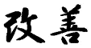
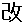
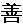
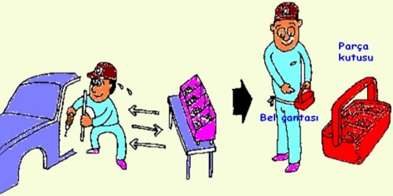
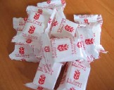
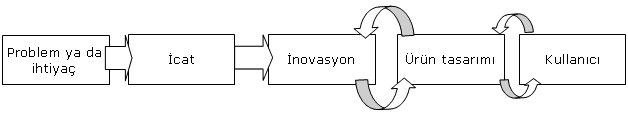
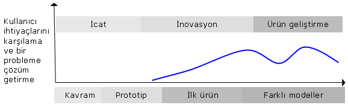
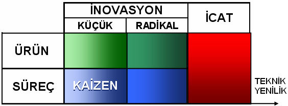

|
Arif Özver Ergin
B.Sc. Makine Müh.
M.Sc. Endüstriyel Tasarým
Nisan 2008, Güzelyalý / Ýstanbul
Kaizen 80'li ve 90 yýllarda Türkiye'nin gündeminde geniþ yer alan bir konu oldu. Japon kültürü ile ilgili olan bu güncel kavramýn Türkiye'ye gelmesi ile birlikte Türkler'in Japonlar'la olan kültürel ortaklýklarý, ruh hallerinin benzerlikleri konuþuldu. Bu benzerlikler Kaizen'e olan muhtemel yatkýnlýðýmýza yorularak Kaizen konusunda teknoloji ve ekonomi politikalarý üretmemizin Türkiye açýsýndan faydalý olacaðý ciddi olarak tartýþýldý.
Kaizen Türkiye'de belli bir ölçekte hayata geçirildi. Bu konuda makaleler yazýldý, master &doktora tezleri yapýldý, þirketlere ödüller verildi, sempozyumlar düzenlendi. Birçok firma Kaizen'e önem vererek maliyetlerini indirebildiler ve çalýþanlarýnýn motivasyon kazanmasýný saðladýlar. Derken Kaizen yavaþ yavaþ gündemdeki yerini kaybetti. Peþi sýra; 6Sigma, Yalýn Üretim, Toplam Kalite Yönetimi gibi benzer konular konuþulmaya baþlandý. Ýki binlere baþladýðýmýzda ise çok daha kuvvetli bir rüzgar esmeye baþladý ve Sanayi, Bilim-Teknoloji tartýþmalarýnýn merkezine yerleþti: Ýnovasyon.
Peki bir zamanlar üzerinde kafa yorduðumuz Kaizen adlý kavramla Ýnovasyon dediðimiz kavram bir birine ne kadar benziyor ve sürekli deðiþen ekonomik, teknolojik kavramlara kendimizi ne kadar doðru adapte ediyoruz?
Kaizen:
Kaizen Japon dilindeki iki ayrý Kanji'nin bir araya gelmesi ile oluþur. Kanji'leri bir sesi deðil de bir kavramý anlatan karýþýk harfler olarak düþünebiliriz:
|  |
 ('kai') KAI deðiþim yada düzeltme anlamýna gelir. |
|  ('zen') ZEN ise "iyi" demektir. |
Netice olarak KAIZEN Japonca'da "Ýyi yönde deðiþim" yada "Ýlerleme" demektir.
Kaizen'in amacý (Japonca'da Muda ile, Ýngilizce'de Waste ile ifade edilen) ziyanýn önüne geçmektir. Burada ziyaný, "maliyetleri arttýran ama ürüne yada sisteme hiçbir katkýsý olmayan ve artý deðer eklemeyen faaliyetler olarak tanýmlayabiliriz. Ziyan temel olarak 7 ana baþlýk altýnda ele alýnýr:
- Gereðinden Fazla Üretim,
- Beklemek
- Nakliye
- Eþit olmayan iþ yükü
- Aþýrý stok
- Gereksiz hareketler
- Hatalar
Bu anlamda Kaizen bütün bu ziyanlarý önlemek amacýyla yola çýkar ve mevcut durumu parçalara ayýrýp analiz ederek daha verimli ve iyi bir þekilde tekrar bir araya getirir.
Kaizen'in baþka bir önemli özelliði de sürekli olmasý, küçük çalýþmalarýn sürekli devam ederek sonuçta büyük bir yekun oluþturmasýdýr. Bu yüzden Kaizen uygulayan þirketlerde hedefler fabrikada çalýþan her kiþinin bir yýlda yapacaðý Kaizen miktarýna göre belirlenir.

Yukarýdaki örnek Kaizen uygulamasýnda, araca takýlacak parçalarýn ve el aletlerinin bir bel çantasýnda taþýnmasý böylelikle parça raflarýna gelgitlerdeki zaman kaybýnýn engellenmesi ve çalýþanýn daha az yorulmasý anlatýlmýþtýr. Benzer þekilde Kaizen sistemini uygulayan þirketlerde, Kaizen önerileri "Bir iþi en iyi yapan bilir" ilkesi çerçevesinde çalýþanlar tarafýndan yapýlýr.
Ýnovasyon:
Ýnovasyon Türkçe'ye; yenilikçilik, yenilik, yenileþim gibi farklý þekillerde çevrilse de "Ýnovasyon" çoðunlukla kabul görmüþ bir kullanýmdýr. "Ýnovasyon, yeni veya önemli ölçüde deðiþtirilmiþ ürün (mal ya da hizmet), veya sürecin; yeni bir pazarlama yönteminin; ya da iþ uygulamalarýnda, iþyeri organizasyonunda veya dýþ iliþkilerde yeni bir organizasyonel yöntemin uygulanmasýdýr."
Saðda, hayatýmýzýn her yanýnda rastlayabileceðimiz güncel bir inovasyonu görebilirsiniz. Bu uygulamada küp þekerler küçük plastik poþetlere yerleþtirilmiþ, böylece þekerlerin çay tabaðýnda ýslanarak israf olmasý engellenmiþ, kullanýlmayan þekerlerin tekrar kullanýlabilmesi saðlanmýþtýr, böylece yeni ve ekonomik bir deðer yaratýlmýþtýr.
Toz þeker yüz yýllardýr bilinen bir ürün olmasýna raðmen daha sonradan farklý ihtiyaçlar için küp þeker geliþtirilmiþtir. Toz þekerden küp þekere geçiþ süreci bir inovasyondur. Benzer þekilde Küp Þekerin teker teker poþetlenmesi de bir inovasyondur.
Ýnovasyonun en çok karýþtýrýldýðý olgu "invention", yani icattýr. Ýcat bir düþüncenin ilk olarak ortaya çýkmasý, yaratýlmasýdýr ve çok ileri aþamada teknik yenilik gerektirir. Ýnovasyon ise icadýn peþi sýra gelebileceði gibi icat olmayan daha basit yaratýcý fikirler sonucunda da ortaya çýkabilir.

Ýnovasyonun doðasý gereði arasýndaki sýnýrlarýn çok net olmadýðý baþka bir alanda Ürün Tasarýmý'dýr. Ürün tasarýmý farklý formlar, renkler, kullaným özellikleri ve estetik ile ilgili olabilir. Ancak bir yenilik içermeyebilir.

Kaizen mi? Ýnovasyon mu?.
Kaizen ve inovasyonun tartýþmasýz en büyük ortak özellikleri yaratýcý boyutlarýdýr. Ayrýca Kaizen de inovasyon da bir probleme çözüm getirir ve bir ihtiyaca cevap verir. Ancak Kaizen genellikle üründen çok süreçle ilgilidir. Ýnovasyon ise genel olarak ürünle ilgili olmakla birlikte süreci de kapsar. Literatürde inovasyon; küçük veya radikal, süreç veya ürün yelpazesinde deðerlendirilir. Kaizen ve Ýnovasyonu birlikte deðerlendirecek olursak Küçük Süreç Ýnovasyonlarý'nýn tanýmlarý ve uygulamalarý gereði Kaizen'le hemen hemen ayný þeyler olduðu sonucuna ulaþabiliriz.

Sonuç:
Kaizen, 6Sigma, TQM, Yalýn Üretim ve Ýnovasyon gibi kavramlar dünyada ortaya çýkýþlarýný ve popüler oluþlarýný takiben kýsa süre içinde Türkiye'de de tartýþýlmaya baþlanmakta, sanayi, üniversite ve kamu kuruluþlarýnda deðerlendirilmekte ve geliþtirilmektedir. Bu olgularý tam olarak özümseyen ve uygulayan kuruluþlar çalýþmalarýndan önemli katkýlar elde etmekte, kendi þirketleri ve Türkiye için katma deðer yaratmaktadýrlar.
Ancak bir çok kavram zaman içinde deðerini kaybetmese bile güncelliðini yitirmektedir. Bu yazýda Kaizen ve Ýnovasyonun bir arada ele alýnmasýnýn sebebi, modern ve popüler deðerlerin gerçekten özümsenmesi, kýsa zamanda tüketilip bir köþeye atýlmamasý ve sürekli takip edilmesi gerektiðini vurgulamaktýr.
Referanslar:
www.anadoluseker.com.tr/kup_seker.html
Arif Ergin, 2000. Dynamics of Product Innovation in the Turkish Manufacturing Industry, Master Thesis, Middle East Technical University
http://en.wikipedia.org/wiki/Kaizen
http://en.wikipedia.org/wiki/Innovation
www.1000ventures.com/business_guide/mgmt_kaizen_main.html
www.1000ventures.com/business_guide/innovation_radical_vs_incr.html
|